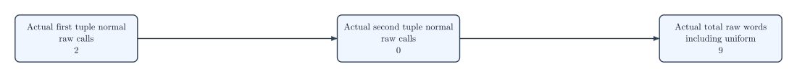
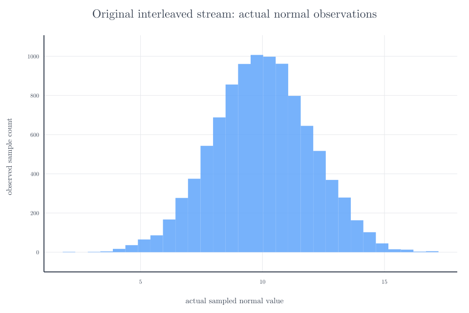
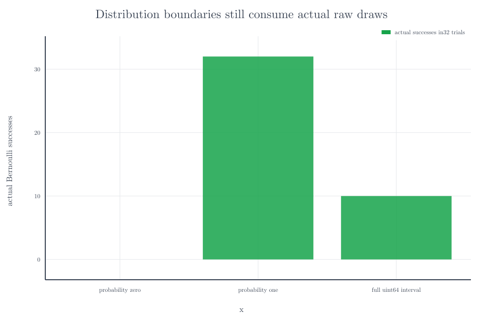
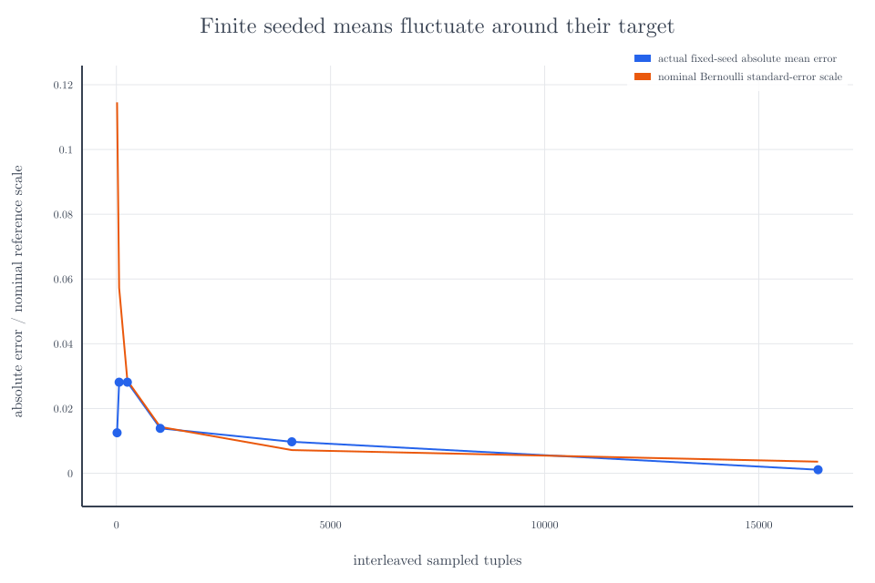

Random variate generation: actual raw words, rejection and cached normal draws
Abstract
Simulation needs reproducible observations with specified distributions, not just a stream of raw integer words. Canonical datamunge samplers transform SplitMix64 output into bounded integers, Bernoulli outcomes, normal observations and exponential waiting times. Actual raw offsets expose rejection and the normal spare cache. The original seed0xC0FFEE,10,000 interleaved tuples and final uniform draw remain; fixed-seed summaries are descriptive simulation results.
Mechanism and mathematical scope
The uniform real sampler maps the high53 bits to \(u=k/2^{53}\in[0,1)\). For an inclusive integer interval of width s, multiply the full raw word x by s, reject low products below \(2^{64}\bmod s\), and return the accepted high word plus the lower endpoint. This removes the unequal remainder cells without relying on weak low bits; the full uint64 interval returns the raw word directly.
The normal sampler retries a zero first uniform draw and caches the second normal output. A cache hit consumes no new raw words. These finite-grid transforms approximate their continuous distribution targets; the grid truncates extreme tails. Exact raw-engine reproducibility does not imply cross-libm bitwise equality for log, sine and cosine. The empirical means have theoretical targets p,mu and1/lambda under their model, but one finite seed is not a distribution-quality or independence certificate.
A tiny actual producing history
The table and native concept diagram read the same producing execution. Every block below is a complete editable C++ program.
#include <dm/dm.hpp>
int main() {
namespace a = dm::algorithms;
namespace g = dm::graphics;
std::filesystem::create_directories("build");
namespace r = dm::random;
auto t = r::sample_distributions_trace(42, 2);
std::print("\n| actual tuple | raw before | after integer | after Bernoulli | after normal | after " "exponential |\n| ---: | ---: | ---: | ---: | ---: | ---: |\n");
for (std::size_t i = 0; i < t.samples.size(); ++i) {
const auto &s = t.samples[i];
std::print("| {} | {} | {} | {} | {} | {} |\n", i, s.raw_offsets[0],
s.raw_offsets[1], s.raw_offsets[2], s.raw_offsets[3],
s.raw_offsets[4]);
}
const auto &first = t.samples[0];
const auto &second = t.samples[1];
g::Diagram d;
d.node("n0", {0, 0},
std::format("Actual first tuple normal raw calls\n{}",
first.raw_offsets[3] - first.raw_offsets[2]));
d.node("n1", {10, 0},
std::format("Actual second tuple normal raw calls\n{}",
second.raw_offsets[3] - second.raw_offsets[2]));
d.node("n2", {20, 0},
std::format("Actual total raw words including uniform\n{}",
t.raw_draws));
d.edge("n0", "n1").edge("n1", "n2");
d.save_svg("build/random_generation_tiny.svg");
}| actual tuple | raw before | after integer | after Bernoulli | after normal | after exponential |
|---|---|---|---|---|---|
| 0 | 0 | 1 | 2 | 4 | 5 |
| 1 | 5 | 6 | 7 | 7 | 8 |

The retained original experiment
#include <dm/dm.hpp>
int main() {
namespace a = dm::algorithms;
namespace g = dm::graphics;
std::filesystem::create_directories("build");
namespace r = dm::random;
auto t = r::sample_distributions_run(0xC0FFEEULL, 10000);
std::print("\n| original stream quantity | actual native value |\n| --- | ---: |\n| final uniform[-2,5) " "| {:.4f} |\n| observed integer minimum | {} |\n| observed integer maximum | {} |\n| " "Bernoulli mean | {:.4f} |\n| normal mean | {:.4f} |\n| exponential mean | {:.4f} |\n| " "actual raw calls | {} |\n",
t.final_uniform, t.minimum, t.maximum, t.bernoulli_mean,
t.normal_mean, t.exponential_mean, t.raw_draws);
std::vector<double> normal;
for (const auto &s : t.samples)
normal.push_back(s.normal);
auto p = g::RPlot::hist(normal, 30);
p.title("Original interleaved stream: actual normal observations").x_label(
"actual sampled normal value").y_label("observed sample count");
p.save_svg("build/random_generation_original.svg");
}| original stream quantity | actual native value |
|---|---|
| final uniform[-2,5) | 2.8865 |
| observed integer minimum | 3 |
| observed integer maximum | 11 |
| Bernoulli mean | 0.3007 |
| normal mean | 9.9848 |
| exponential mean | 0.2489 |
| actual raw calls | 40001 |

Explicit controls
#include <dm/dm.hpp>
int main() {
namespace a = dm::algorithms;
namespace g = dm::graphics;
std::filesystem::create_directories("build");
namespace r = dm::random;
std::vector<double> counts;
std::vector<std::string> labels{"probability zero", "probability one",
"full uint64 interval"};
std::print("\n| actual control | Bernoulli successes | actual integer min | actual integer max | actual " "raw draws |\n| --- | ---: | ---: | ---: | ---: |\n");
for (int i = 0; i < 3; ++i) {
r::SamplingParameters p;
if (i < 2)
p.probability = i;
else {
p.integer_lower = 0;
p.integer_upper = std::numeric_limits<std::uint64_t>::max();
}
auto t = r::sample_distributions_run(42, 32, p);
counts.push_back(t.successes);
std::print("| {} | {} | {} | {} | {} |\n", labels[i], t.successes,
t.minimum, t.maximum, t.raw_draws);
}
r::SamplingParameters p;
p.uniform_lower = 1;
p.uniform_upper = std::nextafter(1., 2.);
auto adjacent = r::sample_distributions_run(42, 0, p);
p.uniform_lower = -std::numeric_limits<double>::max();
p.uniform_upper = std::numeric_limits<double>::max();
auto extreme = r::sample_distributions_run(42, 0, p);
std::print("Adjacent-double half-open result equals lower: {}; extreme-span final draw finite: {}; " "zero-tuple raw draws: {}.\n",
adjacent.final_uniform == 1,
std::isfinite(extreme.final_uniform), adjacent.raw_draws);
auto plot =
g::RPlot::barplot(counts, labels, "actual successes in32 trials");
plot.title("Distribution boundaries still consume actual raw draws").y_label("actual Bernoulli successes");
plot.save_svg("build/random_generation_controls.svg");
}| actual control | Bernoulli successes | actual integer min | actual integer max | actual raw draws |
|---|---|---|---|---|
| probability zero | 0 | 3 | 11 | 129 |
| probability one | 32 | 3 | 11 | 129 |
| full uint64 interval | 10 | 260778234563238397 | 17797468212087351942 | 129 |
Adjacent-double half-open result equals lower: true; extreme-span final draw finite: true; zero-tuple raw draws: 1.

Actual selected work and sensitivity
#include <dm/dm.hpp>
int main() {
namespace a = dm::algorithms;
namespace g = dm::graphics;
std::filesystem::create_directories("build");
namespace r = dm::random;
std::vector<double> x, y, z;
std::print("\n| tuples | actual Bernoulli mean | absolute target error | nominal sqrt(p(1-p)/n) | " "actual normal mean | actual exponential mean | actual raw draws |\n| ---: | ---: | ---: | " "---: | ---: | ---: | ---: |\n");
for (std::size_t n : {16, 64, 256, 1024, 4096, 16384}) {
auto t = r::sample_distributions_run(0xC0FFEEULL, n);
x.push_back(n);
y.push_back(std::fabs(t.bernoulli_mean - .3));
z.push_back(std::sqrt(.3 * .7 / n));
std::print("| {} | {} | {} | {} | {} | {} | {} |\n", n,
t.bernoulli_mean, y.back(), z.back(), t.normal_mean,
t.exponential_mean, t.raw_draws);
}
auto p = g::RPlot::create();
p.lines(x, y, "actual fixed-seed absolute mean error", {37, 99, 235}).lines(
x, z, "nominal Bernoulli standard-error scale", {234, 88, 12}).points(
x, y, {37, 99, 235}, 5).title("Finite seeded means fluctuate around their target").x_label("interleaved sampled tuples").y_label("absolute error / nominal reference scale");
p.save_svg("build/random_generation_work.svg");
}| tuples | actual Bernoulli mean | absolute target error | nominal sqrt(p(1-p)/n) | actual normal mean | actual exponential mean | actual raw draws |
|---|---|---|---|---|---|---|
| 16 | 0.3125 | 0.012500000000000011 | 0.114564392373896 | 9.81497547662891 | 0.24008010224732926 | 65 |
| 64 | 0.328125 | 0.02812500000000001 | 0.057282196186948 | 9.608598273608427 | 0.27951651503853375 | 257 |
| 256 | 0.328125 | 0.02812500000000001 | 0.028641098093474 | 9.968950106033603 | 0.2520824747660563 | 1025 |
| 1024 | 0.2861328125 | 0.013867187499999989 | 0.014320549046737 | 10.032948980075911 | 0.25294392555430967 | 4097 |
| 4096 | 0.290283203125 | 0.009716796874999989 | 0.0071602745233685 | 10.004636562147153 | 0.25089951963875096 | 16385 |
| 16384 | 0.30108642578125 | 0.001086425781250011 | 0.00358013726168425 | 10.004556432276813 | 0.25051030145058373 | 65537 |

API and interpretation
The original integer-interval prose described modulo-prefix rejection; the implementation actually uses Lemire multiply-high rejection, which this report now states. A native observer delegates to the same distribution methods and records actual raw words, including rejected candidates and the post-loop uniform draw. Counting does not substitute a second sampling algorithm. Extreme finite uniform spans now stay finite, and rounding to an exclusive upper endpoint clamps inward. Overflowing exponential/normal results throw after consuming their underlying sampler state. The nominal standard-error curve is a theoretical scale, not an empirical confidence interval, and finite errors need not decrease monotonically. None of this makes SplitMix64 a cryptographic entropy source.
Reusable producers, fixtures and histories live in the canonical C++ library. Captured records own their values and do not come from a separate report replay. Selected counters and record/scalar policies are specified at their API boundaries; they are not peak-byte or wall-time budgets. Synthetic structural inputs are controlled fixtures for these mechanisms.
References
- SplitMix64 canonical source
- Lemire, Fast Random Integer Generation in an Interval (2019)
- Box and Muller, A Note on the Generation of Random Normal Deviates (1958)
Verified in the shared ten-document batch: 108 scoped native cases (22 new plus86 existing; one unchanged Rayleigh failure baseline-confirmed and carried to batch314–323);22 directly instrumented ASan/UBSan cases;91 executable public examples;367/367 full-file definitions plus17/17 common-sampler/engine definitions;10 hovers;32478 independent records/106910 checks;frozen compatibility across all ten families;12 checkout/installed standalone headers and linked consumer;40 executed programs and40 inspected figures with both exports. Legacy retirement follows the completed validation gates.